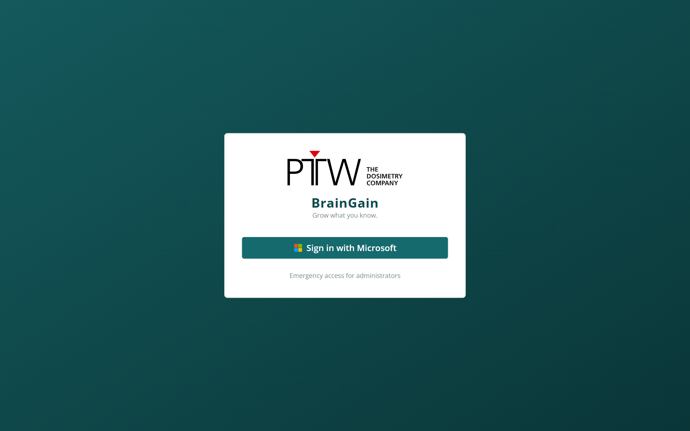
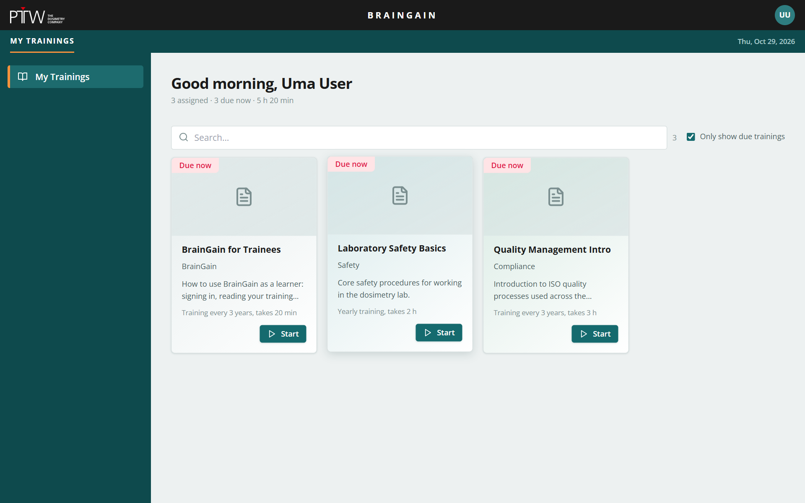
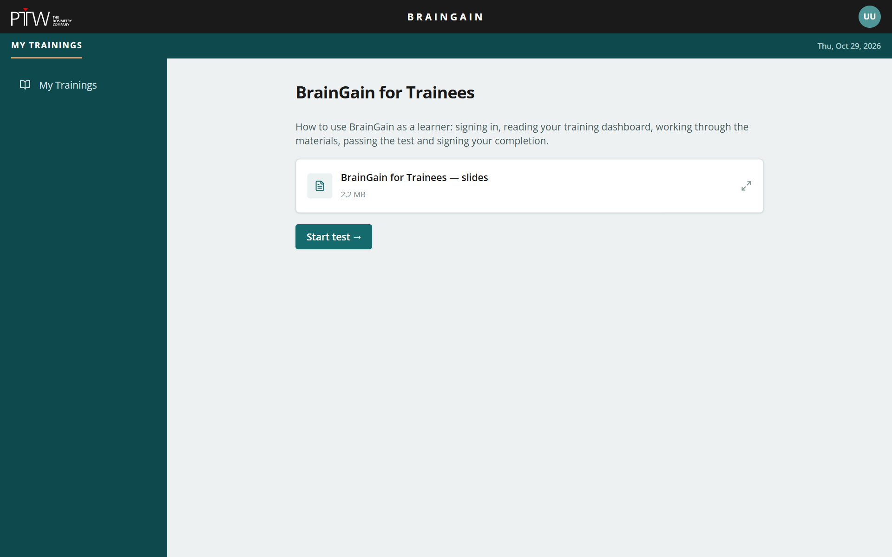
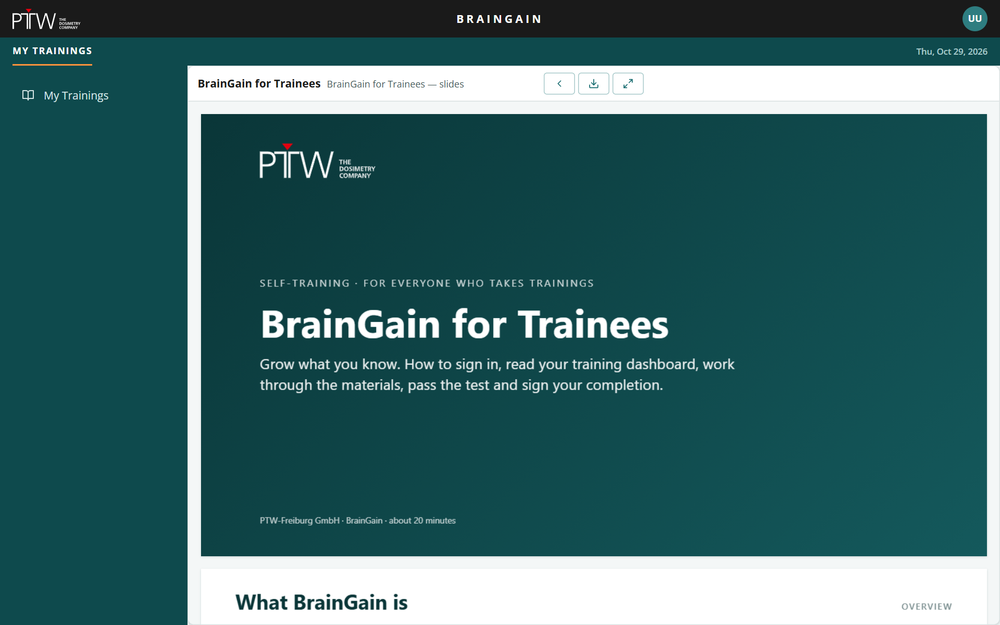
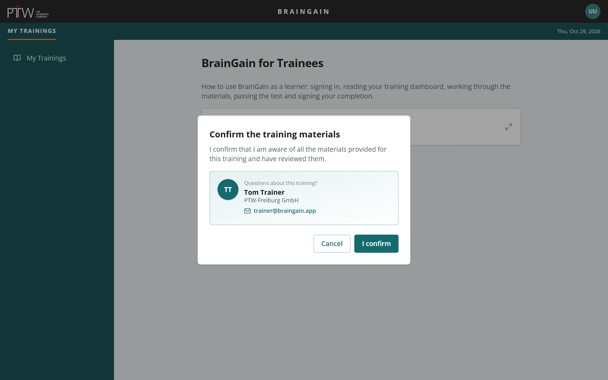
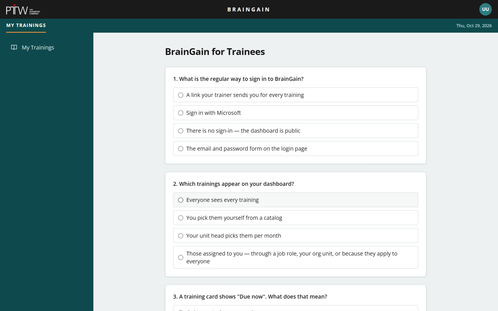
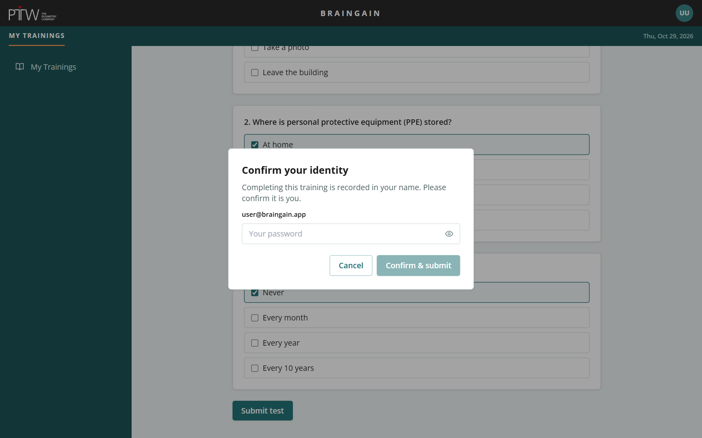
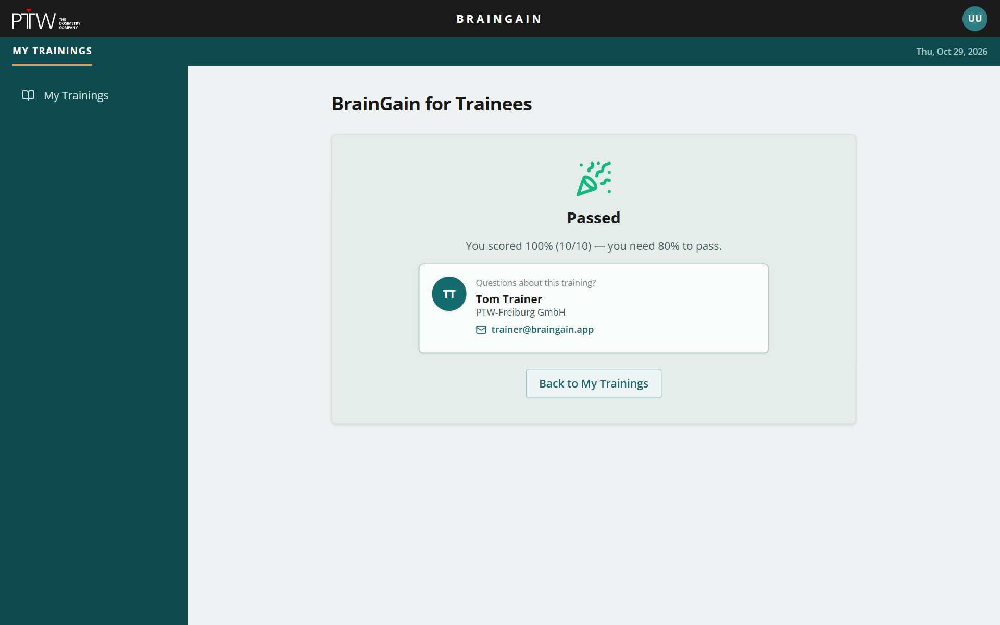
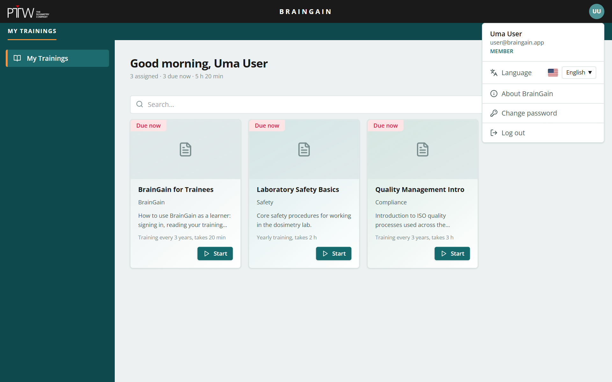

Grow what you know. How to sign in, read your training dashboard, work through the materials, pass the test and sign your completion.
BrainGain manages the mandatory trainings of our company. It tells you which trainings you must take, when they are due, and records the evidence that you completed them.
With your Microsoft account.
Dashboard “My Trainings”.
Open them in BrainGain, confirm you reviewed them.
Sign the completion with your password or Microsoft.
Signing in and understanding your dashboard.


Every training has a repeat cycle (for example yearly). Around the due date a window opens in which you can take it; after a grace period it counts as overdue.
| Pill | Meaning | What to do |
|---|---|---|
| Due now | You have never passed this training, or its repeat cycle has come around. | Take it now. |
| Due now · by date | The window is open; the date is when the current cycle ends. | Take it before the date. |
| Overdue | The due date and the grace period have passed. | Take it immediately — your unit head sees this too. |
| Up to date · Next due date | You passed; the next due date is shown. You can still open the training to review the materials. | Nothing to do. |
| Updated · by date | The trainer published new content and asks everyone who already passed to act on it by the date. | Retake, or review and confirm — the training tells you which. |
| In preparation | The training exists but has no published version yet. | Wait — you cannot start it. |
Materials, confirmation, test, signature, result.
Start on a card opens the training. The first page lists its learning materials.


Uploaded PDFs, videos and images open in a viewer that fills the page. The controls are icons with tooltips:
Before any test starts, BrainGain asks you to confirm that you are aware of all materials and have reviewed them.


Submitting the test is recorded in your name — like a signature on a paper attendance list. So BrainGain asks you to confirm it is really you.


Your score and the threshold are shown. The completion is stored with date and time; the card turns Up to date with the next due date.
Failed attempts are not recorded. Click Retry test as often as you need — the training stays due until you pass. Depending on the settings, the questions you answered wrong are listed (never the correct answers).
Updated trainings, SCORM courses, your account.
Trainers can publish new content for a training. If they decide that everyone who already passed must act on it, your card shows Updated · by date, you get an email, and the training opens with a banner.
Go through the training again like the first time: materials, confirmation, test, signature. The new passing result also restarts your regular cycle.
Open the updated materials, then click Confirm updated materials → and confirm. No test. Your regular cycle is unchanged; the card returns to Up to date.
Some trainings are delivered as an imported interactive course instead of materials plus a test. The course is both the material and the test.
Clicking Start launches the course inside BrainGain. There is no material list; the course guides you.
The title line shows Saved … after each step. Exit and continue later lets you resume where you left off. Start over discards the progress.
When the course reports that you are done, the button Finish and sign completion appears — the same identity confirmation as for a test.
The course is not BrainGain's own UI. It never needs your password — if it asks for credentials, stop and tell your trainer.

Click your initials in the top-right corner.
Close this viewer with ‹ Back, click Start test →, confirm the materials and answer the questions. Everything you need is in these slides.
10 questions · single and multiple choice · unlimited attempts